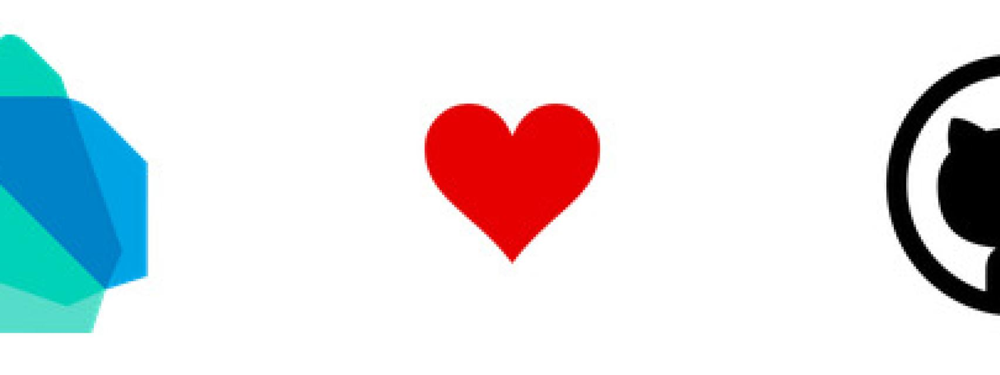
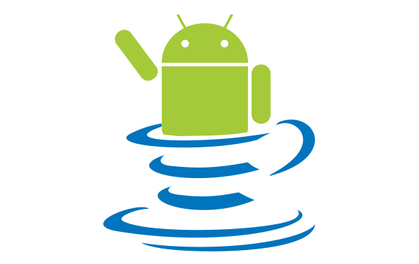

Dart, ¿el lenguaje de programación perfecto para Android?
Conforme se va acercando el Google I/O del presente año, van apareciendo un gran número de discusiones, artículos, posts, tweets y noticias en la red sobre nuevos lenguajes de programación.
Pero, ¿viene todo esto movido por la presentación de Apple de su nuevo lenguaje Swift en la pasada WWDC 2014? El mes de junio ha sido movido para los desarrolladores de Apple, quienes han llegado a afirmar en algunos foros que Android no está actualizado en comparación con iOS desde el punto de vista de un desarrollador, por el hecho de seguir basados en Java. Hoy vamos a ver el punto de vista de Cyril Mottier, un programador de apps que ha sido reconocido por Google como Google Developer Expert en Android.
El software no puede depender de legisladores, sólo de desarrolladores
Google y Oracle han luchado para que el uso de Java en Android haya sido posible. De hecho, el juicio entre ambas compañías ha sido uno de los más importantes en la historia reciente de la informática, aunque ahora parecen estar en una fase de aguas calmadas. De hecho, para Google es peligroso depender de los lenguajes de programación de los competidores, pues viven bajo la amenaza de demandas.
Los lenguajes de programación deben evolucionar
Para Mottier, Google ya debería haber sustituido Java por otro lenguaje de programación. Personalmente, él cree que Google ha estado trabajando en secreto en un lenguaje de programación para sustituir Java al menos tanto tiempo como lo ha hecho Apple con Swift (desde 2010).
Mucha gente opina que Go sería una buena alternativa, pero otros tantos, como Mottier, piensan que Dart es más apropiado, por razones como que es un lenguaje más maduro y basado en máquina virtual (como ya es Java). Además, se ajusta mejor al ecosistema Google y su curva de aprendizaje es realmente sencilla para los desarrolladores. Es por ello, que no ven sólo a Dart como el posible futuro de Android, sino de la compañía en sí.
